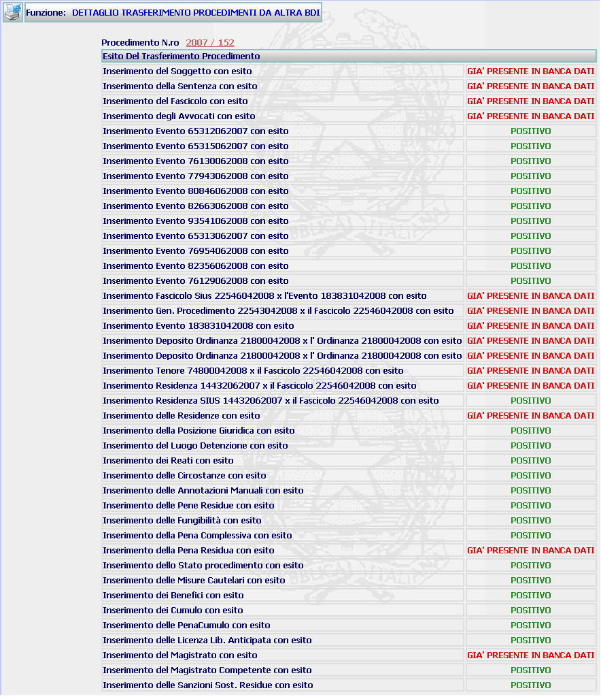

DETTAGLIO TRASFERIMENTO PROCEDIMENTI DA ALTRA BDI: La funzione consente di visualizzare il dettaglio del procedimento Siep di una Procura di altro Distretto trasferito nella propria banca dati. N.B. La visualizzazione della maschera che segue sta ad indicare che il procedimento Siep è stato correttamente trasferito nella propria banca dati e che, di conseguenza, può essere utilizzato come gli altri titoli appartenenti a Procure del Distretto di appartenenza.
LE MASCHERE VIDEO
La funzione viene realizzata attraverso la maschera seguente in cui compare il dettaglio del procedimento trasferito.

COME FARE PER ...
Per visualizzare il dettaglio del procedimento Siep l'utente deve cliccare sul link relativo all' Anno/Numero del procedimento Siep evidenziato in rosso;
PULSANTI
E' presente il pulsante
 , facente parte del gruppo di
pulsanti di "Uso Comune"
, facente parte del gruppo di
pulsanti di "Uso Comune"